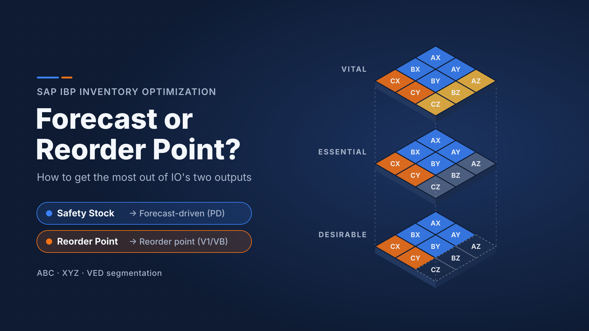

When I started exploring SAP IBP Inventory Optimization (IO) back in 2017, one of the first things I learned was that IO produces two outputs: a Recommended Safety Stock and a Reorder Point.
Everyone knows what happens to the safety stock: it flows into time-series supply planning or order-based planning and gets used there. But what about the reorder point? Where does that go?
Coming from a PP background, I also knew that in the ERP you can effectively use only one of these outputs per material, and the MRP type decides which one. That raised another question. What if my client has only an IO license? IO gives a time-series safety stock, a different value for every period, but the material master has a single safety stock field. How is that supposed to work?
So what is the intention here, and how can we use these outputs to our maximum benefit? That is what this article is about.
Two numbers from IBP, two ways to plan
IO looks at how much your demand swings, how reliable your suppliers are and what service level you're aiming for. From that, it recommends two numbers:
- Safety stock: the extra cushion you keep in case demand is higher or supply is later than expected.
- Reorder point: the stock level at which you should place a new order. It's the safety stock plus what you expect to use while waiting for the delivery.
Each number has a natural home: safety stock works with forecast planning, and the reorder point works with reorder point planning.
Why one setting decides which number counts
In SAP S/4HANA (and ECC), every material carries an MRP type. Think of it as the instruction that tells the system how to replenish that item. For this decision, two choices matter:
- Forecast-driven planning (MRP type
PD): the system looks ahead at forecast and orders, and keeps the safety stock as a cushion. The reorder point is ignored. - Reorder point planning (MRP type
V1orVB): the system waits until stock drops below the reorder point, then orders. The forecast is not used to trigger orders.
So the question isn't "which number is better?" It's "which way of planning suits this material?" Once you've answered that, you know which IO number to send.
V1/VB), not the automatic ones (VM/V2). The automatic types recalculate the reorder point themselves and overwrite the value IBP sent.
Only have an IO license? Making a time-series safety stock fit one field
If IBP supply planning isn't in scope, the ERP is where IO's numbers are actually used. IO gives a value for every period, but the material master holds one safety stock and one reorder point. That doesn't make the time-series useless. It means you choose which value to send, and how often to refresh it:
- Send the value that matters next. Use the period at the end of the replenishment lead time, since that's the protection today's orders need to cover.
- Refresh it regularly. Re-run IO monthly and update the field, so the single value follows the time-series over the year.
- Use the peak for seasonal items. Where under-stocking in peak season is costly, send the highest value in the horizon and accept some extra stock off-season.
- Keep the profile where the ERP supports it. Time-dependent safety stock in PP/DS, or a range-of-coverage profile in MRP, can carry more of the time-phased shape than a single number.
The same applies to the reorder point: send it only to materials on V1/VB, and refresh it on the same rhythm.
Sort your materials with three simple questions
You don't need a complex model to decide. Ask three questions about each material:
- How much money does it tie up? (ABC) A items are the few that make up most of your inventory value. C items are the many cheap ones.
- How predictable is its demand? (XYZ) X items sell steadily, Y items swing up and down, and Z items are erratic and hard to forecast.
- What happens if we run out? (VED) Vital items stop production or create a safety risk. Essential items hurt, but there is a workaround. Desirable items barely matter.
Put together, these three questions place every material in one of 27 cells, like a cube. Value and predictability tell you how to plan the item. Criticality tells you how much protection to buy.
The decision grid
Here's the cube flattened into something you can use on a Monday morning. Find the material's value class (row) and demand pattern (column), then adjust for how critical it is.
The logic is simple. Forecasting takes effort, so spend it where it pays back: on expensive items and on items whose demand moves around. For cheap, steady items, a reorder point does the job with almost no planner effort. Erratic items need a closer look whatever their value.
Stack the grid once for each criticality class and you get the full cube. The method barely changes from layer to layer. What changes is the erratic column: vital Z items keep insurance stock, while desirable Z items aren't stocked at all.
A quick check for any single material
When you're looking at one material and don't want to open the whole grid, these four questions get you to the same answer.
The first two questions catch the items that must be planned ahead, whatever their value: parts used in production, and items whose suppliers are slow or unreliable. Everything else comes down to value and how steady the demand is.
Keeping it working
A framework set up once at go-live and never revisited goes stale. A few habits keep it useful:
- Re-sort materials every quarter. Products move between classes as they grow, mature and phase out.
- Run IO monthly, and only update the ERP when a value changes meaningfully. Planners shouldn't chase small weekly changes.
- Watch for warning signs. If a reorder point item keeps needing urgent orders, it probably belongs on forecast planning.
Common traps to avoid
- Sending a reorder point to a forecast-driven material and expecting it to work. It won't.
- Using the automatic reorder point types, which quietly overwrite IBP's number.
- Stacking protection: an optimistic forecast plus a full safety stock means you're buffering twice.
- Putting components that feed a bill of materials on reorder point. Their demand comes from production plans, so they belong on forecast planning.
The bottom line
IBP Inventory Optimization gives you the right numbers. The MRP type decides whether your ERP actually uses them.
Plan from the forecast where looking ahead pays off: high-value, predictable or long lead time items. Use a reorder point where demand is steady and the stakes are low. Then let criticality decide how much safety you buy.
How do you plan your C items today: forecast or reorder point? I'd love to hear — drop a comment or DM me.